这份速读清单关注一个共同问题：如何让感知模型从单个数据集、单个任务的专用网络，走向可迁移的表征、语言接口与推理能力？ 当前收录 36 篇：保留首批 5 篇的详细解读与论文截图，并整合飞书文献阅读表中的 32 篇文献，重复的 HoloLLM 合并到同一条目。分类用于阅读导航，不代表各模型使用完全相同的数据或监督。
阅读来源与边界。 新增内容不只摘录表格摘要，还整理了其中 24 篇可访问阅读笔记的“重点论记”和“十问”，包括问题、方法、实验、贡献及下一步思考；每篇提供原笔记与公开论文入口。UniMTS 的阅读笔记当前无访问权限，另有 7 篇原表未提供阅读笔记链接，这 8 篇标为“公开论文补读”。原笔记中尚未回答的问题不补写成原作者观点；正文“阅读思考”是整理者的分析，不等同于论文已验证的结论。
SensorLM 和 SensorFM 虽放在“可穿戴 / IMU”类，实际上还使用 PPG、皮温、皮电等信号，并非仅处理高频 IMU 原始波形。AM-FM 属于 WiFi 表征模型，也不是语言生成模型；OneLLM 与 HoloLLM 才直接以 LLM 作为多模态输出接口。“基座”在这些工作中指向的能力并不完全相同。
版本与截图。 首批五篇的正文及裁图分别采用 SensorLM 2506.09108v1、SensorFM 2605.22759v3、AM-FM 2602.11200v1、OneLLM 2312.03700v2、HoloLLM 2505.17645v2。论文数值优先按这些版本记录；官方博客、仓库补充背景与资源入口。资料核对日期：2026 年 10 月 21 日。封面裁自 SensorLM 图 1，第 2 页。
全部 36 篇论文目录
先看五篇起步模型的横向对照
| 分类与论文 | 感知输入 | 核心学习方式 | 数据规模或覆盖 | 主要输出与验证 |
|---|---|---|---|---|
| 可穿戴：SensorLM | 5 类传感器派生的 26 个分钟级特征，24 小时窗口 | 层次化 caption + 对比 / 生成联合预训练 | 103,643 人；约 5,970 万小时 | 零样本活动识别、跨模态检索、caption、少样本迁移 |
| 可穿戴：SensorFM | 5 类传感器派生的 34 个分钟级特征，24 小时窗口 | 缺失感知的掩码重建；下游预测头与 agent 工具化 | 500 万人；超一万亿分钟；35 项健康相关任务 | 健康表征、预测、数据补全、健康 agent 的额外上下文 |
| WiFi：AM-FM | WiFi CSI 幅度时序 | 对比学习 + 掩码重建 + ACF 物理辅助目标 | 920 万样本；439 天；20 类设备；11 个环境 | 8 项分类任务 + WiFi 成像；冻结探测 / adapter 适配 |
| 多模态：OneLLM | 图像、视频、音频、点云、深度、法线、IMU、fMRI | 共享 CLIP 编码器 + 通用投影专家 + 渐进对齐 / 指令微调 | 约 200 万条多模态指令；25 个 benchmark | Caption、问答、分类与语言交互 |
| 多模态：HoloLLM | MM-Fi 与 XRF55 上的视觉、深度、LiDAR、毫米波、红外、RFID、WiFi | CLIP 初始特征 + 专用编码器 + UMIP 粗到细注入 | 两个感知数据集衍生的语言 benchmark | 动作识别、选项式动作 QA、动作描述；随机 / 跨人 / 跨环境 |
读表时的区别： 预训练规模不是开放数据规模；同一模型“支持多模态”不等于每次实验同时融合所有输入；零样本识别、冻结编码器探测、adapter 适配和指令微调使用的监督条件不同，不能只比较最终分数。
一、综述：先界定“基座”和评估边界
HAR 基座模型综述：不能只凭“大模型 + HAR”命名
Foundation Models Defining A New Era In Sensor-based Human Activity Recognition: A Survey And Outlook · 2026 预印本。
公开论文 · 原阅读笔记 · 文献资源库
问题与方法。 综述按数据准备、预训练、适配与应用四阶段组织感知基座的生命周期，而不是仅按网络结构排列论文。原笔记强调六个判断维度：数据覆盖、跨域泛化、模态扩展与语义落地、标注效率、可复用适配接口和任务广度；这有助于区分可迁移的感知编码器、语言对齐模型与临时调用 LLM 的分类流程。
证据与范围。 这是一份分类和研究议程，不是统一训练条件下的排行榜。文中的能力比较不能直接替代跨受试者、跨设备或跨任务实验；不同工作的“零样本”和“多模态”也需要逐篇拆解。
阅读思考。 对组内工作，优先追问“哪些能力可以不重训主干而复用”。把某一数据集转成 prompt 得到高分，并不足以证明学到了通用感知基座。值得继续研究的是标签本体统一、预训练与测试数据去重、非独立同分布数据以及长期漂移，并据此建立可复现的迁移评估协议。
多模态可穿戴 HAR 综述：融合、监督与缺失模态一起看
A Survey on Multimodal Wearable Sensor-based Human Action Recognition · 本条沿用原阅读材料对应的预印本。
公开论文 · 原阅读笔记
问题与方法。 综述区分视觉与非视觉之间的跨模态学习，以及多种非视觉传感器之间的联合建模，梳理融合、对齐、知识蒸馏和模态缺失等路线。核心问题不只是“再加一个输入”，还包括异步采样、标注稀缺、传感器可靠性和真实部署成本。
证据与范围。 本条整理原笔记的重点记录与展望；原笔记的部分“十问”尚未填写，不将空白补写为既有结论。综述汇总的不同数据集和划分并不构成统一的性能比较。
阅读思考。 后续方向包括未知动作、未来行为预测、长序列建模、同时发生的动作分割、个性化与隐私保护。对缺失模态研究，需区分训练时可用、推理时缺失和持续不完整采集三种条件；如果视觉仅用于生成监督，就不能把测试时的 IMU 模型称为持续融合视觉的系统。
二、可穿戴 / IMU 与生理信号
SensorLM：把可穿戴信号变成可检索、可描述的语言表征
SensorLM: Learning the Language of Wearable Sensors
Yuwei Zhang、Kumar Ayush 等，Google Research / Google DeepMind / University of Cambridge。本文读取 arXiv v1（2025）。
论文与版本 · 论文 PDF · Google Research 博客
核心问题与输入
可穿戴设备产生大量连续数据，但很少自带细致文本。SensorLM 的主要贡献，是先构造可扩展的 sensor–text 监督，再让模型同时具备对齐和描述能力。输入不是直接展开的原始波形，而是 Fitbit / Pixel Watch 上 PPG、三轴加速度计、海拔计、皮温、EDA 派生的 26 × 1440 特征矩阵，即一天的分钟级记录。§3.1，第 4 页
方法：先构造语言，再联合对齐与生成
- 统计层 caption：均值、极值、标准差等数值，经模板转为文字。
- 结构层 caption：检测时间趋势、峰值、上升 / 下降区间，并写明发生时间。
- 语义层 caption：整合活动、睡眠区间和用户记录的情绪。这里包含已有识别结果和自报信息，不能等同于完全无标签的语义真值。
- 联合训练：传感器编码器、文本编码器、跨模态文本解码器共同支持对比损失与 caption 损失；CLIP、Cap、CoCa 是统一框架中的不同配置，主实验通常采用结构层与语义层 caption。§3–4，第 4–7 页
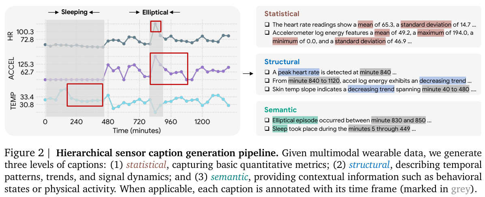
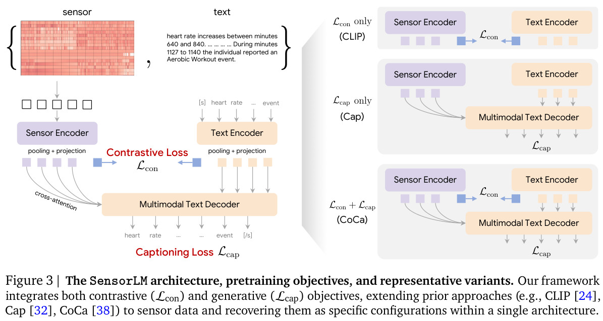
数据、结果与应如何理解
预训练使用 2,489,570 人天、103,643 人、127 个国家的数据，约 5,970 万小时。v1 表 2 的 20 类零样本活动识别为 AUROC 0.84、Macro F1 0.29、Balanced Accuracy 0.31；AUROC 0.84 不能写成“84% 分类准确率”。其中 Activity 评估来自与预训练相同的 population；独立的检索评估则使用未进入预训练的 975 人，健康任务另有持出观察性队列，不能把所有实验都称为统一的跨人外部验证。§3.3、§5、表 2，第 5–8 页
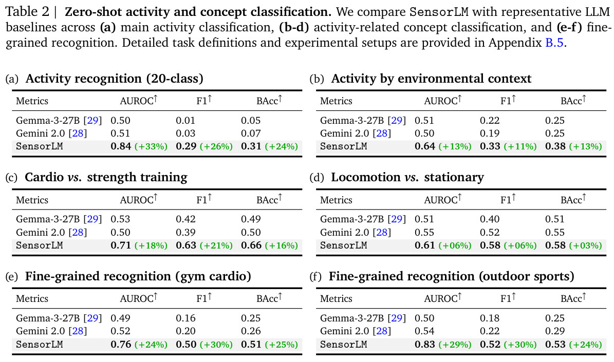
研究启发。 值得优先复用的是“统计—结构—语义”分层构造文本的方式，以及对齐和生成的联合目标。若迁移到高频 IMU，应重新考虑时间窗口、文本粒度和事件边界，不能直接照搬一天的分钟级矩阵。论文明确提示其并非经临床验证的诊断工具，其他设备与传感器类型上的泛化仍需评估。§6，第 11 页
SensorFM：从大规模健康表征到可调用的预测工具
Towards a General Intelligence and Interface for Wearable Health Data
Girish Narayanswamy、Maxwell A. Xu 等，Google Research / Google DeepMind 及合作机构。模型名为 SensorFM，本文读取 arXiv v3（2026）。
论文与版本 · 论文 PDF · Google Research 博客
核心问题与输入
SensorFM 关注健康标签稀缺、个体基线差异大、记录经常缺失的现实条件。输入是 PPG、加速度、EDA、皮温、海拔计派生的 34 个分钟级特征，覆盖 24 小时。预训练来自 500 万人、超一万亿分钟的未标注数据；它首先学习可复用的感知表征，而不是直接把每条原始信号输入聊天模型。§1–2、Methods M.1
方法：重建、适配、工具化分开看
- 缺失感知预训练：MAE 类 encoder–decoder 采用 Adaptive and Inherited Masking（AIM），结合自然缺失与人为掩码学习重建，沿用已有的 AIM 思路。
- 下游表征验证：冻结编码器，使用降维后的 embedding 训练轻量线性头，评估不同健康结局；这一步需要下游标签。
- Agentic classroom：多个 LLM agent 搜索和评估预测头代码，探索超 30,000 个候选方案；agent 优化的是下游建模过程。
- Personal Health Agent：将 SensorFM 下游预测作为额外上下文提供给 Gemini，再评价生成的健康摘要。该接口是工具增强路线，不应写成 SensorFM 自身直接端到端输出医学对话。§2.2–2.6、Methods M.3、M.5
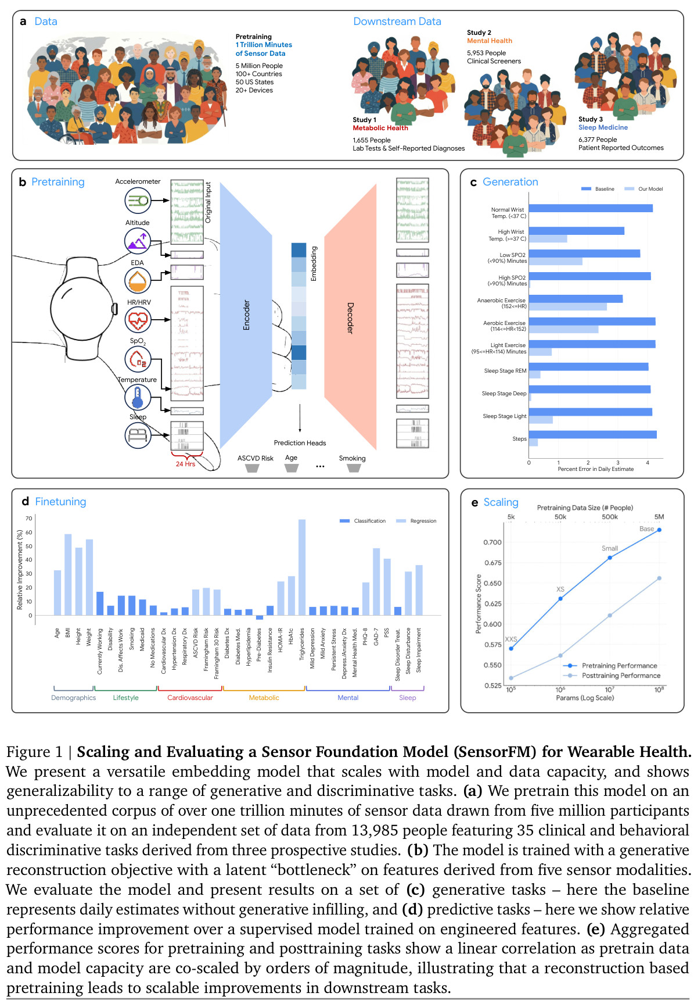
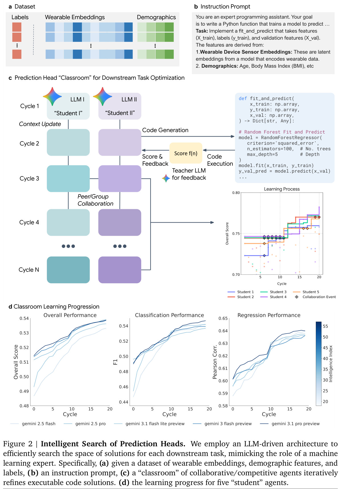
结果：三个评价层次
| 评价层次 | 论文所报告的证据 | 解释范围 |
|---|---|---|
| 表征与线性头 | 3 个独立前瞻性研究、13,985 人、35 项任务；34/35 项优于特征工程监督基线 | 不同任务采用不同指标；不是35项统一的诊断准确率 |
| 模型 / 数据联合扩展 | 大模型与小模型在最大数据量下，分类平均 ΔAUC = 0.09，回归平均 Δr = 0.21 | 是指标的绝对差值，不应笼统写成“准确率提升9% / 21%” |
| Agent 预测头搜索 | 20 项分类中16项、15项回归中12项优于简单线性头 | 需要标签、验证与搜索计算；分类这里报告F1，与上行AUC不同 |
| 健康摘要评价 | 31 个真实参与者档案、4 名临床评价者、1,860 次评分 | 是静态单轮摘要的评价次数，并非1,860名患者或长期临床试验 |
数值与协议见 §2.1–2.2、第 7–8 页、§2.5–2.6、第 11–12 页。
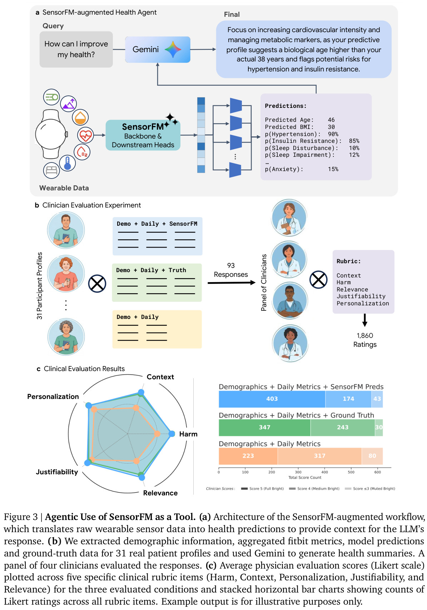
研究启发。 对感知团队最有参考价值的是：用自然缺失参与预训练、冻结表征以验证迁移、把预测器作为有证据来源的 agent 工具。分钟聚合会丢失亚秒级动作与精细心搏结构；其他设备生态、群体代表性、自报健康标签及多轮真实部署仍有局限。论文规模与预测效果也不意味着数据和权重已按相同范围开放。§3.6，第 15–16 页
预训练时序模型适配 HAR：先建立清楚的迁移基线
A Novel Human Activity Recognition Framework Based on Pre-Trained Foundation Model · IEEE BIBM 2024。
公开论文 · 原阅读笔记
问题与方法。 将原本面向时间序列的 Chronos-T5 迁移到活动识别，统一三轴加速度输入，并比较线性、LSTM、CNN 等适配模块。它回答的是“通用时序预训练能否帮助 HAR”，而不是从零建立一个覆盖所有身体位置和传感器的模型。
实验与证据。 原笔记记录了五个动作数据集上的适配、模型规模和结构比较。应分别看每个数据集结果及微调条件；某一数据集接近满分，不代表五个数据集的平均表现，更不能自动解释为跨数据集泛化。
阅读思考。 适合作为 Chronos 加分类头的起点基线，但论证重点仍应放在迁移收益。复现时检查滑窗重叠、是否按人划分以及目标域标签预算，比较同参数量从零训练与冻结主干。下一步可研究为什么某些时序先验适用于动作，另一些会因采样率、位置和运动频谱变化而失效。
IMU2IMG：将惯性信号编码为视觉模型可接收的输入
IMU2IMG: IMU in the Language of Vision Foundation Models · UbiComp Companion 2025，SHL Challenge 工作。
公开论文 · 作者 PDF · 原阅读笔记
问题与方法。 对 5 秒、100 Hz 的加速度、陀螺仪、磁力计信号计算模长并切分 patch，经可学习映射构成三通道图像，再交给预训练 ViT 分类。重点是借用视觉预训练，而不是将传感器波形当作自然照片。
实验与证据。 原笔记关注 SHL 2025 的跨用户、跨携带位置条件，以及视觉预训练相对从零训练的收益。训练、验证与测试来自不同用户；验证集 Macro F1 与挑战测试结果必须分开，不能把调参阶段的分数直接写成最终泛化能力。
阅读思考。 这是输入重编程路线的简明例子，但 RGB 通道没有天然的人体视觉语义，图像化也不直接带来可解释性。可继续比较可学习图像、时频图和原始时序编码，在相同参数与目标域标签条件下检查增益到底来自预训练、输入转换还是分类器容量。
生成式基座与 HAR：从数据稀缺转向可控制的合成
On the Benefit of Generative Foundation Models for Human Activity Recognition · 2023 预印本 / 展望。
公开论文 · 原阅读笔记
问题与方法。 原笔记把核心问题归为动作标注昂贵、隐私敏感且容易出错，提出以 LLM 生成活动描述、运动生成模型合成三维动作、物理模拟得到虚拟 IMU 的串联路线。其直接技术背景包括 IMUTube 和文本生成虚拟传感器的早期工作。
证据与范围。 这是愿景与研究议程，不应把文中引用的前期实验改写为本论文独立完成的大规模验证。原笔记中的实验设计等问题也有留白。
阅读思考。 有价值的下一步不是无限扩充同义动作描述，而是控制身体部位、动作阶段、强度和上下文，形成可验证的层次标签；还可以把活动识别结果组织成日常摘要。疾病动作合成只是待验证方向，需真实临床数据和专业校验，不能由合成曲线直接推断医学有效性。
HAR-DoReMi：数据配比本身就是预训练变量
HAR-DoReMi: Optimizing Data Mixture for Self-Supervised Human Activity Recognition Across Heterogeneous IMU Datasets · 2025 预印本。
公开论文 · 原阅读笔记
问题与方法。 异构 IMU 数据简单混合可能让易学或数量大的域占据训练。方法借用 DoReMi / Group DRO 的域权重思想，以掩码重建误差替代语言模型的似然损失，学习各数据源的采样配比；使用 Mahony 姿态估计等预处理减小方向差异。
实验与证据。 原笔记讨论 HHAR、Motion、Shoaib、UCI 等数据的留一数据集测试，并将身体位置进一步作为子域。共享动作集合较小，所得结论主要支持当前任务和域划分下的数据选择效率，不等同于覆盖日常活动全空间。
阅读思考。 “更多数据”与“更合适的数据混合”需要分开研究。值得追问域权重能否迁移到新模型、是否过度偏向某类动作，以及姿态估计在磁干扰、初始方向不准时是否仍可靠。后续可在固定计算预算下，对比均匀采样、按规模采样和自适应配比，而不只报告最终准确率。
IMUZero：用身体运动属性连接已见与未见活动
IMUZero: Zero-Shot Human Activity Recognition by Language-based Cross Modality Fusion · IMWUT 2025。
作者论文 · 官方代码 · 原阅读笔记
问题与方法。 以 LLM 将活动名称转换为身体部位和运动属性，结合 IMU 的时域、频域特征，通过跨模态交互建立活动语义与传感器表征的对应；通道打乱等约束用于减少方向偏置。目标是在未提供某些动作训练样本时，仍可根据它们的描述识别活动。
实验与证据。 原笔记记录 PAMAP2、DSADS、MHEALTH、GOTOV，以及每次保留若干未见类别的实验。普通零样本测试只在未见类中选；广义零样本同时包含已见和未见类，还应看二者的调和平均，而不能只看已见类高分。
阅读思考。 原笔记特别指出：训练时预先给出未见类属性，与测试时才临时加入全新类别描述，难度不同；后者实验并不理想。因此它不是无需任何先验的开放世界动作发现。下一步可研究属性是否真正被传感器观测到、相近动作语义如何区分，以及测试时动态扩类的校准与拒识。
Customizable HAR-FM：复用编码器，不等于取消位置差异
Towards Customizable Foundation Models for Human Activity Recognition with Wearable Devices · IMWUT 2025。
公开论文 · 作者 PDF · 原阅读笔记
问题与方法。 先通过向量量化学习离散运动词表，结合码本多样性、对比学习与掩码 token 预测；再联合 HAR 分类、文本语义和 token 预测，构建可适配不同用户需求的表征。语义接口来自预训练文本表示，不是模型自动生成所有活动解释。
实验与证据。 原笔记记录四个预训练数据集、五个下游数据集，以及不同窗口、传感器组合和跨用户划分。微调、少样本和零样本结果应分开：有标签微调收益并不能直接证明开放词汇识别同样可靠。
阅读思考。 一个容易忽略的条件是，腕部、上臂和口袋等位置有分别训练的模型，不能写成一个模型已无条件覆盖所有佩戴位置。可继续研究共享码本能否跨位置迁移、词表是否编码动作而非设备特征，并与简单的连续特征预训练在相同数据和计算下比较。
SensorLLM：趋势对齐有效，但输出仍可受固定分类头约束
SensorLLM: Aligning Large Language Models with Motion Sensors for Human Activity Recognition · EMNLP 2025。
正式论文 · 官方代码 · 原阅读笔记
问题与方法。 使用冻结的 Chronos 时序编码器和 LLaMA，通过可训练映射与通道 token 对齐传感器和语言。第一阶段由信号自动构造趋势问答，第二阶段结合多通道、统计提示和活动标签训练 HAR 分类。
实验与证据。 笔记关注 USC-HAD、UCI-HAR、PAMAP2、mHealth、Capture-24 等数据，以及移除对齐阶段、通道 token 和统计信息的消融。跨数据集复用对齐能力，与完全不使用目标数据标签，是不同条件；下游 HAR 训练仍需按论文设置提供监督。
阅读思考。 原笔记提出两点值得延伸：趋势文本能否覆盖周期、频率和动作阶段，而非只描述升降；固定分类头能否改为可校验的开放词汇生成接口。语言对齐不自动意味着可以解释任意动作，还应检查复杂周期运动、相近动作及非典型佩戴条件下的误差。
HARGPT：直接提示 LLM，作为无需训练的对照起点
HARGPT: Are LLMs Zero-Shot Human Activity Recognizers? · FMSys 2024。
公开论文补读 · 原表未提供阅读笔记链接。
问题与方法。 将下采样后的 IMU 数值序列与任务描述、候选活动等写入提示，直接调用 LLM 做活动判断，并研究提示组织方式。与 SensorLLM 不同，它不先训练一个传感器—语言对齐模块。
实验与证据。 论文在选定活动、窗口和模型条件下验证可行性；结果受到采样、数值格式、上下文长度、提示和闭源模型版本影响。一次调用不训练参数，不代表整个流程没有类别先验或预处理设计。
阅读思考。 适合作为“直接数字提示”的低门槛基线，不宜据此宣称 LLM 已具备普遍的物理运动理解。后续应与统计特征提示、专用时序模型比较，固定测试类别与调用版本，报告成本、延迟、重复调用稳定性及对数值扰动的敏感程度。
UniMTS：用虚拟运动预训练统一运动时序
UniMTS: Unified Pre-training for Motion Time Series · NeurIPS 2024。
公开论文补读 · 官方代码 · 原笔记入口，当前无权限
问题与方法。 从人体运动捕捉数据模拟多身体位置的 IMU，以旋转增强减小传感器方向差异，通过时空结构建模和运动—文本对比学习构造可迁移表征。它试图把跨数据集、跨位置和活动语义放在统一预训练框架中。
实验与证据。 依据公开论文与仓库补读，本条没有把不可访问笔记中的“十问”当成已读内容。论文中的零样本、少样本与完整微调分别使用不同监督预算；位置覆盖和虚拟数据的生成条件也需要与目标传感器对应。
阅读思考。 它与 Wonderwall、IMUGPT 系列可以组成“虚拟运动到真实 IMU”的对照线。应检查坐标系、重力、陀螺仪计算和身体附着假设，以及真实设备噪声是否导致域差距；人体动作语义相近，并不保证模拟波形能准确代替真实测量。
CrossHAR：目标数据不可见时的跨数据集泛化
CrossHAR: Generalizing Cross-dataset Human Activity Recognition via Hierarchical Self-Supervised Pretraining · IMWUT 2024。
公开论文 · 官方代码 · 原阅读笔记
问题与方法。 面向设备、受试者和采集条件变化，结合局部掩码重建与全局对比约束，分阶段训练层次化表征。轴置换等增强用于减小方向依赖，随后利用源域标签训练识别头。
实验与证据。 原笔记关注 UCI、HHAR、Shoaib、Motion 的单源到多目标、多源到单目标设置。其关键是训练时目标数据不可见，即域泛化；若预先使用目标无标签数据，就变成不同的域适配条件。共享类别映射也限定了测试范围。
阅读思考。 掩码重建和对比学习承担局部、全局不同约束，不能只把它概括为“用了 Transformer”。需要继续检查轴变换是否物理合理、每个数据集是否存在预处理捷径，以及跨环境、跨设备、跨人分别带来多少误差。保留一个完全未参与调参的数据集更能检验迁移主张。
IMUGPT 2.0：合成数据还需要相关性筛选和停止准则
IMUGPT 2.0: Language-Based Cross Modality Transfer for Sensor-Based Human Activity Recognition · IMWUT 2024。
公开论文补读 · 正式出版 · 项目页 · 原表未提供阅读笔记链接。
问题与方法。 沿用文本描述到三维运动再到虚拟 IMU 的路线，进一步识别偏题生成结果，并以多样性变化决定何时停止继续合成。它优化的不只是识别网络，还包括训练数据生产流程。
实验与证据。 公开论文比较合成数量、质量和下游识别表现。生成开销减少与识别精度提升属于不同指标；合成预训练后再使用真实标签适配，也不能叫完全无真实监督。
阅读思考。 文本多样不一定对应动力学多样；生成器还可能稳定地产生同一种步态或身体比例。后续可把物理可行性、动作阶段覆盖和真实域收益一起作为筛选依据，比较“多生成”与“少而有效”的计算预算，并避免将生成错误的标签同步注入下游模型。
IMUGPT 早期工作：文本到运动，再到虚拟加速度
Generating Virtual On-body Accelerometer Data from Virtual Textual Descriptions for Human Activity Recognition · ISWC 2023。
公开论文补读 · 正式出版 · 项目页 · 原表未提供阅读笔记链接。
问题与方法。 通过 ChatGPT 扩展活动描述，用 T2M-GPT 合成三维人体运动，再由 IMUSim 在指定身体位置生成虚拟加速度。这里不是让语言模型直接编造连续 IMU 数值，而是增加一个运动学中间表示。
实验与证据。 公开论文在 RealWorld、PAMAP2、USC-HAD 等数据上考察合成数据的训练价值。合成与真实数据联合训练的收益，应与纯合成迁移区分；不同佩戴位置和真实采集条件仍存在域差距。
阅读思考。 这项工作提供了可执行的数据生成链路，但动作文本正确并不保证模拟传感器正确。值得沿着描述、三维运动、传感器三层逐级校验，记录失败模式，再研究真实少量校准数据应放在哪一步最有效，而不是只增加提示模板。
WeakHAR：用视频帮助标注，而非在推理时依赖视频
Weak-Annotation of HAR Datasets using Vision Foundation Models · ISWC 2024。
公开论文补读 · 官方代码 · 原表未提供阅读笔记链接。
问题与方法。 对同步视频提取预训练视觉特征并聚类，人工查看代表性片段，再将标签传播为可穿戴数据的弱监督。目标是降低标注工作量，训练传感器侧活动识别器。
实验与证据。 公开论文在 WEAR、Wetlab、ActionSense 等数据上分析弱标注质量和识别性能。标签传播准确率与最终 HAR 准确率是两种评价；代表片段仍需人工标注，训练过程也要求同步视频，不能称作完全无人工或无视觉的数据生产。
阅读思考。 可借鉴的是“少量人工核验 + 表征聚类”的标注流程。关键风险是视频可见动作与传感器可辨动作不一致，以及聚类混入短时过渡动作。下一步可优先标注高不确定片段，并对弱标签错误建模，而非把传播标签当作完全可靠的真值。
IMU2CLIP：同步视频与叙述作为 IMU 的语义桥梁
IMU2CLIP: Multimodal Contrastive Learning for IMU Motion Sensors from Egocentric Videos and Text Narrations · 预印本标题；正式版为 IMU2CLIP: Language-grounded Motion Sensor Translation with Multimodal Contrastive Learning，Findings of EMNLP 2023。
公开论文补读 · 正式论文 · 代码 · 原表未提供阅读笔记链接。
问题与方法。 利用 Ego4D 中同步的第一视角视频、IMU 和文本叙述，把运动传感器映射到 CLIP 的视觉—语言空间，以支持跨模态检索与活动相关任务。
实验与证据。 检索、零样本分类和有标签微调的设置需要分别阅读。同步配对提供监督，并不意味着每条视频描述中的物体、场景和细节都能由 IMU 独立观测。
阅读思考。 它是理解 SensorLM、OneLLM 等语义对齐路线的有用前驱。下一步应区分“运动能支持的语义”与“借视觉学到的上下文共现”，以只改场景不改动作、只改动作不改场景的对照检验模型，避免检索成功掩盖对运动证据的不敏感。
700,000 person-days SSL：大规模真实生活数据的可迁移价值
Self-supervised learning for human activity recognition using 700,000 person-days of wearable data · npj Digital Medicine 2024。
正式论文 · 代码与模型 · 原阅读笔记
问题与方法。 利用 UK Biobank 大规模自由生活加速度记录，通过时间方向、序列置换和时间扭曲等代理任务预训练一维 ResNet。按窗口运动强度加权采样，避免大量静止片段支配学习，是原笔记特别关注的工程设计。
实验与证据。 通过外部数据集、有标签预算、预训练规模和解释性消融考察迁移。应看统一实现下与从零训练、监督预训练的比较；F1 的相对增幅不是准确率提升的百分点。外部任务需要微调时，也不应改称零样本识别。
阅读思考。 重点不只是“数据多”，还包括真实生活分布、采样策略及跨数据集复用。UK Biobank 的人群和设备覆盖仍有限，可继续评估年龄、地理、人种和佩戴位置变化，并在相同计算预算下研究扩人数、扩天数和扩大模型各自的收益。
Scaling Wearable Foundation Models：重建式学习与规模规律
Scaling Wearable Foundation Models · ICLR 2025。
公开论文补读 · 正式会议页面 · 原表未提供阅读笔记链接。
问题与方法。 基于约 16.5 万人的 4,000 万小时可穿戴数据，联合 PPG、加速度、皮电、温度、海拔等派生信号，以生成式重建、补全和预测学习表征，并分析数据、模型与计算之间的扩展关系。
实验与证据。 数据是分钟级处理后的特征，不能与高频原始 IMU 波形按“总小时数”直接比较。模型规模、训练数据和下游标签效率的收益需在论文给定条件内解释；同一设备生态的大样本不自动代表跨设备普适性。
阅读思考。 可与 SensorFM 对照阅读：哪些能力来自掩码目标，哪些来自人群覆盖和特征工程？研究精细动作时，要另检查时间聚合丢失的信息。后续可固定计算量，分开测量更长记录、更多参与者和更丰富传感器带来的增益，而非只追求参数规模。
One Model to Fit Them All：标签语义、身体位置与跨数据集表示
One Model to Fit Them All: Universal IMU-based Human Activity Recognition with LLM-assisted Cross-dataset Representation · IMWUT 2025。
公开论文 · 官方代码 · 原阅读笔记
问题与方法。 结合 IMU 编码、位置建模和时序聚合，以传感器—文本对比学习连接不同数据集的活动语义，再用 LLM 辅助生成数据或描述以缓解类别不均衡，并对身体位置分配自适应权重。
实验与证据。 原笔记记录 HHAR、PAMAP2、RealWorld、UCI、USC-HAD 等数据。联合多数据集训练和留一数据集测试是不同协议；一个模型同时拟合所有已见数据集，并不直接证明对未见数据源有效。“未见数据集”更不等于“未见动作类别”。
阅读思考。 这项工作把标签本体和位置差异纳入统一建模，但“Universal”应由留出条件支持。下一步可检查相似类别的命名差异、LLM 生成样本的物理可行性，以及自适应位置权重在位置识别错误或传感器缺失时是否仍稳定。
Pulse-PPG：保留真实生活噪声的生理表征
Pulse-PPG: An Open-Source Field-Trained PPG Foundation Model for Wearable Applications across Lab and Field Settings · IMWUT 2025。
公开论文 · 原阅读笔记
问题与方法。 在 MOODS 的长期真实生活原始 PPG 上预训练，使用可学习的 motif 距离和相对对比损失，编码心搏形态等细粒度关系，而不是只依赖人工特征或固定增强。其原始波形与 SensorLM / SensorFM 的分钟级派生特征属于不同输入层次。
实验与证据。 原笔记讨论五个数据集上的十一项活动、压力、心率、血压和睡眠相关任务，以及冻结探测、完整微调和野外 / 临床预训练对比。不同任务的 F1、误差和回归指标不能混成一个“健康准确率”。
阅读思考。 噪声既可能反映运动上下文，也可能造成设备和人群偏差，不能推出所有噪声都应保留。后续可联合加速度区分运动与压力，检查肤色、年龄、设备公平性；自报压力与临床诊断标签也应明确区分。预测有效不等于已经具备临床部署资格。
ZARA：检索证据与 agent 推理，需说明知识库中的标签来源
ZARA: Zero-shot Motion Time-Series Analysis via Knowledge and Retrieval Driven LLM Agents · 原表对应 2025 年 v1；后续正式工作标题为 ZARA: Training-Free Motion Time-Series Reasoning via Evidence-Grounded LLM Agents。
原版本补读 · 作者仓库与版本说明 · 原表未提供阅读笔记链接。
问题与方法。 把运动统计特征、活动知识和身体位置等组织成可检索证据，再由多个 LLM agent 做特征筛选、证据整合与活动判断。它不同于把完整数值序列直接写进提示，也不一定需要更新 LLM 权重。
实验与证据。 “Training-free”必须限定训练的对象。作者仓库的知识构建包含利用标签估计特征重要性的流程，因此冻结 LLM 或不训练目标分类器，不等于没有任何带标签知识。原版与后续版本的模块和评估也不应混写。
阅读思考。 值得验证检索证据是否真正改善判断，还是仅引入了类别先验。后续可删除或替换证据，测试答案是否随之合理变化；同时报告知识库构建成本、调用延迟、错误检索和拒识能力。生成流畅解释不等于解释忠实于传感器证据。
Wonderwall：虚拟到真实预训练与身体结构先验
Wonderwall: A Virtual-to-Real Foundation Model for IMU-based HAR · IMWUT 2026。
公开论文 · 原阅读笔记
问题与方法。 先由 HumanML3D 与 IMUSim 构造虚拟运动传感器数据，再接入多个真实 IMU 数据集预训练。动态活动编码结合身体结构先验和可学习连接，试图同时处理动作语义、不同位置及不完整传感器输入。
实验与证据。 原笔记分别讨论未见数据集上的零样本、少样本、完整微调及缺失传感器测试。各协议的标签量不同，不能将完整微调高分当作零样本结果。文中的感知“成像”示例是经生成模型得到的可视化，不是已经准确重建真实场景的证明。
阅读思考。 与 UniMTS 的对照应控制虚拟数据量、真实适配量和模型规模，再判断收益来自身体先验还是更丰富数据。可以继续研究身份与动作解耦、虚实域差距及边缘计算；原笔记还提醒其所列代码资源当时未能正常访问，复现前需核查实际可获得的代码与权重。
三、WiFi 感知基座
AM-FM：让同一 CSI 表征服务多种感知任务
AM-FM: A Foundation Model for Ambient Intelligence Through WiFi
Guozhen Zhu、Yuqian Hu 等，Origin Research / The University of Hong Kong。本文读取 arXiv v1（2026）。
论文与版本 · 论文 PDF
数据与核心问题
论文在真实家庭等环境中持续采集 WiFi CSI，预训练集约 920 万样本、439 天、20 类商业设备、33 台设备、11 个环境、26 位参与者。这里是单一物理感知路线上的多设备、多天线、多子载波异构数据，不能因通道多而把它称为图像、语言、IMU 的联合多模态模型。§3.1，第 3 页
方法：结构归一化 + 三个自监督目标
CSI 使用幅度，按时间窗口分段，以 padding 统一空间 / 频率维度，并做分段归一化。模型通过可学习的频率聚合处理不同子载波质量，以 Transformer 建模相对时间关系。预训练同时优化 对比学习、掩码重建、能量自相关函数 ACF 预测，从无线信号的时序结构中学习可迁移特征。下游使用冻结编码器的 temporal probe（TP），或保留主干并训练 bottleneck adapter（BA）及任务头；两者都不是无标签零样本分类。§3.3–4.4，第 4–6 页
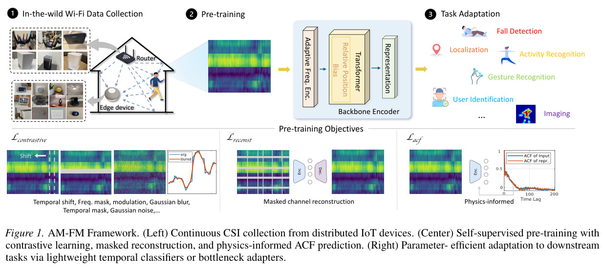
结果与复现注意点
在 CSI-Bench、SignFi、WiFiCam 上验证 9 项任务。表 1 中 BA 的 8 项分类 AUROC 均超过 0.90，例如 HAR 0.923、Proximity 0.936；成像则用 SSIM 0.726 / PSNR 18.87，不应和分类 AUROC 混成一个平均“准确率”。手势任务 BA 为 0.999，TP 为 0.634，说明适配方式会显著影响结论；UID 等任务并非 BA 一定胜过 TP。表 1、§5，第 6–7 页
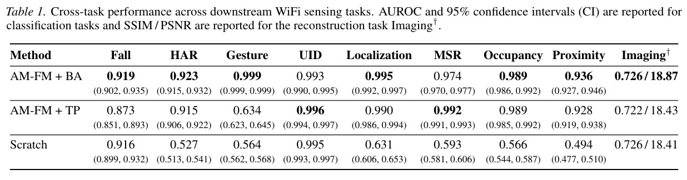
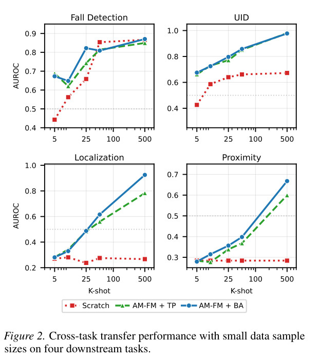
研究启发。 优先比较“仅冻结探测—adapter—从零训练”，并采用物理上合理的 CSI 增强。v1 的消融中，叠加通用图像增强后 HAR 从 0.923 降到 0.561，说明把 CSI 当作普通图片可能破坏任务语义。Large 模型也并非所有任务都优于 Base，不能宣称规模越大必然更好；预训练大数据与公开下游 benchmark 是不同资源。复现时应另核对划分、去重、设备 / 环境覆盖及代码开放情况。§5.4–5.6，第 7–8 页
四、多种模态与语言统一框架
OneLLM：共享编码器与投影专家的渐进模态对齐
OneLLM: One Framework to Align All Modalities with Language
Jiaming Han、Kaixiong Gong 等，CUHK MMLab / Shanghai AI Laboratory。CVPR 2024；本文读取 arXiv v2。
论文与版本 · 论文 PDF · 官方代码、模型与数据说明
模态与模型结构
覆盖 图像、视频、音频、点云、深度图、法线图、IMU、fMRI 共 8 类输入。关键并不是取消所有模态差异，而是使用轻量的模态 tokenizer，把输入送入冻结的 CLIP ViT 通用编码器；Universal Projection Module（UPM）组合多个投影专家，以动态路由和可学习的 modality tokens 压缩并映射到 LLaMA2-7B 的输入空间。它仍有模态专用 tokenizer、router 与 tokens。§3.1，第 3–4 页
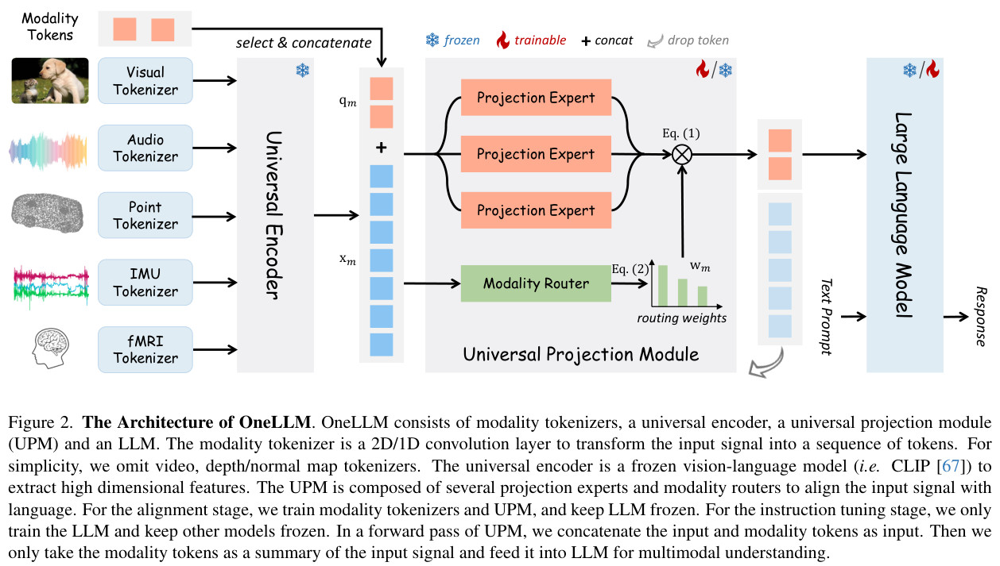
如何训练，监督从哪里来
先做图像—文本对齐，再依数据量渐进加入视频 / 音频 / 点云，最后加入深度 / 法线 / IMU / fMRI；通过重放之前的模态数据缓解遗忘。完成对齐后，用约 200 万条多模态指令微调 LLM。对齐阶段冻结 LLM；指令阶段训练 LLM、冻结其他模块，不能混为“全程只训练 adapter”。§3.2–4.1，第 4–5 页
IMU 数据来自 Ego4D，文本借助相关视频描述；fMRI 来自 NSD，文本对应视觉刺激的 caption；深度 / 法线数据还有从 RGB 推断的成分。这些是不同的监督来源，不能据此宣称模型直接读出任意思想，也不能把该 IMU 结果视为覆盖所有腕戴动作的数据基座。§3.2–3.3，第 5 页
结果与阅读重点
论文覆盖 25 个 benchmark。IMU captioning 在 Ego4D 持出 2,000 条样本上报告 CIDEr 24.9 / ROUGE-L 19.5；fMRI 在 NSD 测试集上为 31.7 / 25.1。这些是文本生成指标，不能称作动作分类准确率。表 7 则分析联合训练、专家数量、动态路由等设计，部分消融仅使用图像 / 音频 / 视频子集，不能直接推出每种感知模态都同幅受益。§4.2–4.3、表 7，第 7 页
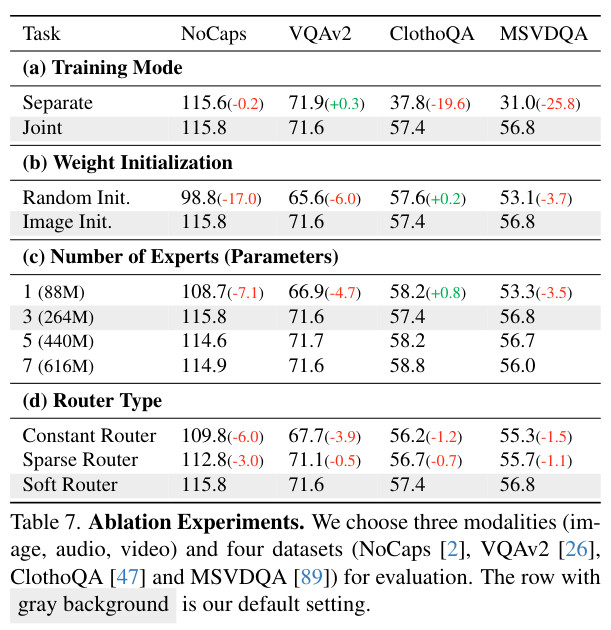
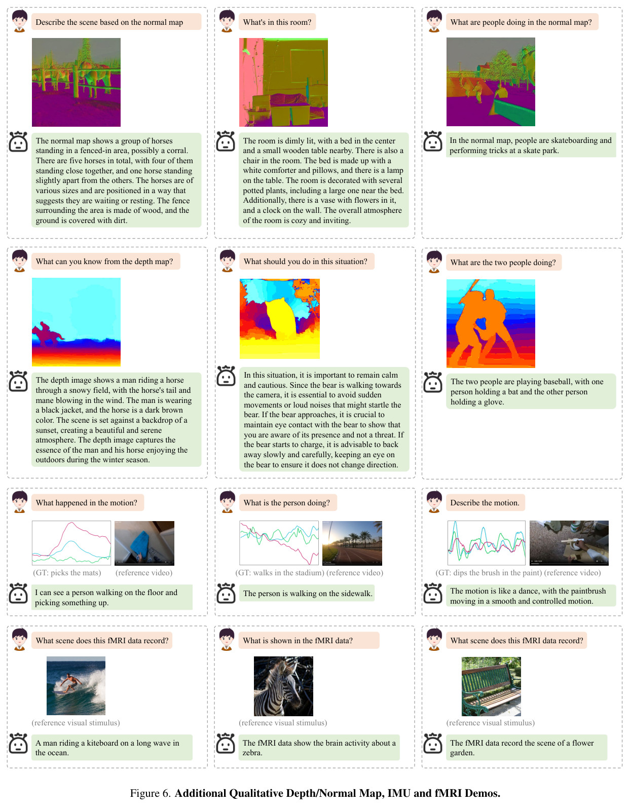
研究启发。 它适合研究“新增感知模态如何低成本接入统一语言空间”。对 WiFi、雷达等新模态，tokenizer、时间 / 空间结构和监督数据仍需重新设计；“通用编码器”不意味着无需训练就能理解任何传感器。官方仓库提供代码、模型及数据说明，实际依赖与许可证按各资源页面核对。
HoloLLM：为稀缺感知模态注入专用特征
HoloLLM: Multisensory Foundation Model for Language-Grounded Human Sensing and Reasoning
Chuhao Zhou、Jianfei Yang，NTU MARS Lab。NeurIPS 2025；本文速读与数值采用 arXiv v2。
论文与版本 · 论文 PDF · 项目页 · 官方仓库与资源
原阅读笔记中的方法分析与后续问题已合并在本条，不重复计数；原表所列年份与正式会议年份不一致，本文沿用 NeurIPS 2025 和上述 v2。
核心问题：仅有语言对齐，还不够辨别感知信号
HoloLLM 针对 WiFi、毫米波、LiDAR、RFID 等稀缺、异构的感知输入。共享 CLIP 表征有语言先验，但对特定感知信号的判别能力不足；纯专用编码器虽能提取信号特征，却缺少直接进入语言空间的良好起点。其 Universal Modality-Injection Projector（UMIP） 将两条路线结合：CLIP 初始 embedding 形成粗粒度 queries，专用编码器提供细粒度 keys / values，迭代 cross-attention 后映射到 LLaMA2-7B。§3.1–3.2，第 3–5 页
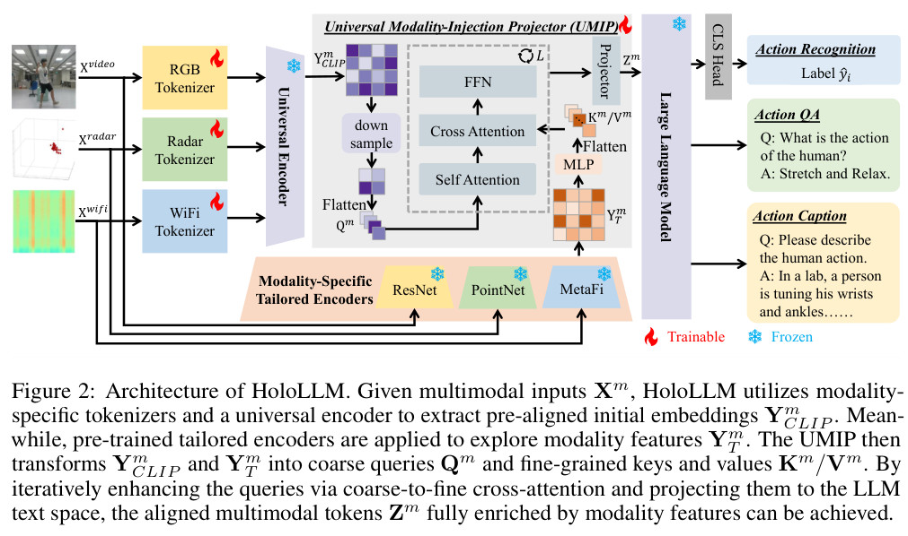
数据构建与训练监督
使用 MM-Fi 和 XRF55 衍生的语言 benchmark。MM-Fi 实验采用视频、Depth、LiDAR、毫米波、WiFi；XRF55 实验采用视频、Depth、IR、RFID、WiFi。这里是该论文实际选用的模态子集，不等同于原数据集所有可用传感器，MM-Fi 和 XRF55 的采集规模也不是新建语言标注的规模。
Action QA 使用动作类别列表与标签构造选项和答案，人工问题经 GPT-4o 改写；caption 通过人工 seed captions 与 LLaVA-Video 从视觉输入生成，再共享给同一样本的其他模态。专用编码器先用 HAR 分类监督训练，再冻结，用 tokenizer / UMIP 结合任务与 next-token 目标训练。因此，它并非完全无标签预训练，也不能把视觉生成 caption 当作每种无线输入都独立观测到的事实。§3.3–3.4、§4.1，第 5–7 页
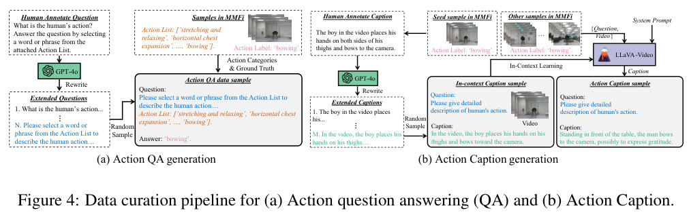
结果：跨人、跨环境仍是关键难点
| MM-Fi 的 HoloLLM 结果 | Random | CrossSub | CrossEnv |
|---|---|---|---|
| 五个输入模态的 Action QA 平均 Accuracy（%） | 86.5 | 71.9 | 56.4 |
| 其中 WiFi 的 Action QA Accuracy（%） | 52.8 | 8.0 | 8.2 |
表中平均值是各模态结果的平均，并非五模态同时融合的准确率；WiFi 在跨人 / 跨环境条件下明显下降。Random 按样本 3:1 划分，CrossSub / CrossEnv 使用不重叠的人 / 环境。QA 采用带选项准确率，caption 采用 METEOR；这几类评价不能混成“通用推理提升30%”。截图同时给出 XRF55 的结果，需在对应数据集和划分内比较。表 1–2，第 7 页
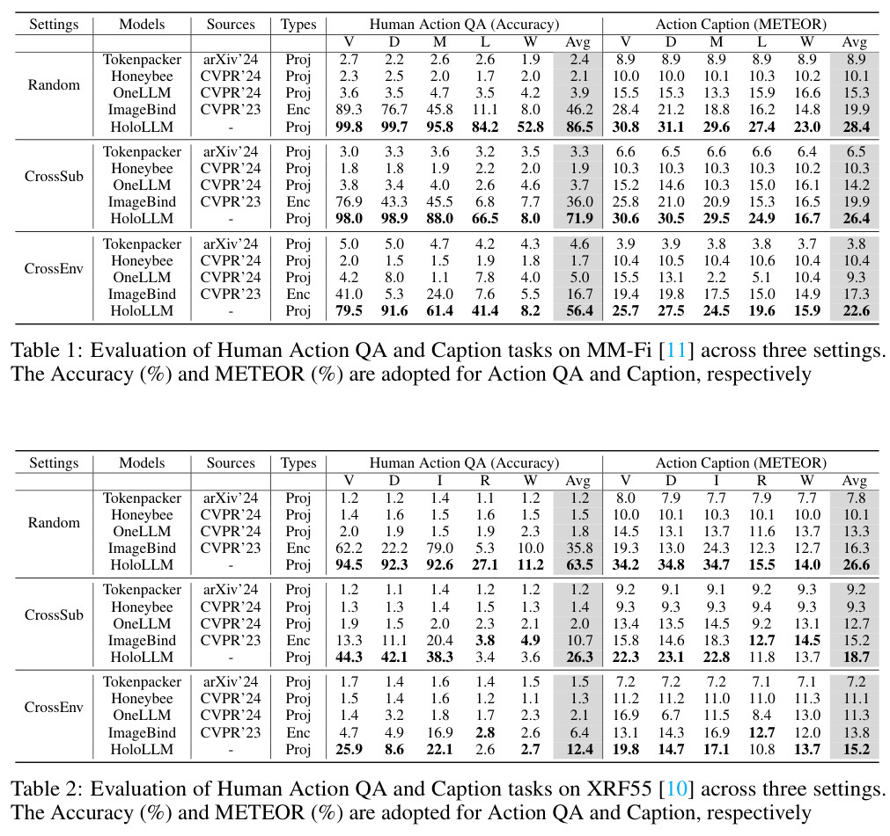
研究启发。 对已有 WiFi / 雷达 / IMU 编码器的团队，最值得借鉴的是“通用语言先验 + 专用感知细节”的 projector，以及先搭建可核验的语言标注链路。接下来可重点研究缺失模态、不可观测信息、跨人 / 跨域退化与有证据的回答，这些是研究延伸方向，不是这篇论文已经解决的结论。数据背景可结合多模态感知数据集清单阅读。
原笔记补充的思考。 阅读时尤其应保留 WiFi 跨人、跨环境大幅退化这一事实，不能只用五模态平均值评价感知能力。还需区分 UMIP 的贡献、专用编码器预训练的贡献以及语言模型的贡献。选项式 QA 和动作描述尚不是规划、控制或主动补充观测；如何在证据不足时表达不确定、选择更有用的模态，是后续研究问题，而非当前系统已有能力。
MASTER：动态模态集合下的共享动作表征
MASTER: A Multi-modal Foundation Model for Human Activity Recognition · IMWUT 2025。
公开论文 · 官方代码 · 原阅读笔记
问题与方法。 针对不同数据集模态组合不一致、部署时模态可缺失的问题，用模态级掩码恢复和判别式约束学习共享特征，再通过少量类别锚点对齐下游任务。原笔记强调恢复的对象是模态表征，不能简单等同于准确生成缺失传感器的原始波形。
实验与证据。 训练资源涉及七个数据集、八类输入，包括加速度、陀螺仪、毫米波、WiFi、骨架、LiDAR、红外和 RGB；并非每条训练样本都同时具备全部八模态。动态模态集合、跨场景、少标注和回归任务分别提供证据，不应把各条件下的收益合成一个总准确率。
阅读思考。 相比只研究固定三模态融合，它更贴近采集条件变化。但还需评估模态长期缺失、质量退化而非完全缺失，以及不同设备延迟与能耗。对我们的数据，可分别测试“训练完整、测试缺失”和“训练本身不完整”，并检查模态恢复是否只记住类别共现而没有保留行为细节。
五、RF：毫米波、WiFi 与物理约束的自监督学习
本类以无线信号表征为主。其中 RF-URL 2.0 和 GSAA 涉及雷达与 WiFi 多种任务；“跨设备验证”不等于一个权重无需适配即可处理所有硬件。RFID 的语言接入见 HoloLLM，不能把 RFID、毫米波和 WiFi CSI 当作同一种输入。
mmCLIP：让毫米波动作信号与文本对齐
mmCLIP: Boosting mmWave-based Zero-shot HAR via Signal-Text Alignment · SenSys 2024。
公开论文 · 官方代码 · 原阅读笔记
问题与方法。 利用人体运动 / 网格资源合成雷达信号，通过 LLM 辅助的动作属性分解和组合扩充描述，建立信号—文本对比学习，再以少量真实数据进行适配。文本提供活动语义，物理模拟提供无线观测，两者并非天然无误配对。
实验与证据。 原笔记记录合成与真实雷达数据、保留未见活动类别的测试，以及信号—文本对齐与轻量适配的作用。这里“零样本”主要针对测试活动类别，并不意味着完全没有相关预训练数据，也不意味着无需真实域校准。
阅读思考。 笔记特别提出雷达观测角度变化：同一动作的径向速度和反射结构会随视角改变，而文本描述可能不变。下一步可显式区分活动语义与观测几何，测试跨方向、跨环境和多人干扰，并比较模拟信号与真实信号在这些条件下的差距。本条与后面的医学 MMCLIP 不是同一工作。
RF-URL 2.0：用信号处理构造互补观测视图
RF-URL 2.0: A General Unsupervised Representation Learning Method for RF Sensing · IEEE TPAMI 2025。
公开论文 · 原阅读笔记
问题与方法。 从同一 RF 测量通过到达角、传播时延、多普勒等信号处理得到多种视图，并施加物理参数扰动。借助 Translator、跨视图对比目标与记忆机制，处理不同视图的统计差异，学习面向下游感知的表示。
实验与证据。 原笔记讨论 WiFi 手势以及雷达姿态、轮廓等任务。无监督的是表征预训练；下游回归或分类仍需按实验配置适配。姿态误差、轮廓 IoU 与分类准确率也不是同一种性能量纲。
阅读思考。 物理多视图比任意图像裁剪更有感知依据，但视图预计算、专用编码器和不同任务适配带来额外成本。“General”不能自动解释为已经训练出统一的语言基座。可继续研究按样本选取有效视图、减少冗余信号处理，以及在未见硬件与复杂多径下保持物理一致性。
Group Shuffle / GSAA：避免增强捷径与预训练分布偏差
Unleashing the Potential of Self-Supervised RF Learning With Group Shuffle · IEEE TMC，2024 在线发表。
公开论文 · 原阅读笔记
问题与方法。 Group Shuffle 以分组局部重排构造 RF 增强，避免过强变换破坏信号；非对称增强把原始信号与增强信号送入不同训练分支，减少模型利用增强痕迹走捷径，以及预训练输入与实际测试输入之间的偏差。
实验与证据。 笔记梳理了高 / 低分辨率雷达和 WiFi 的七项任务，包括姿态、轮廓、跌倒、手势和身份识别，以及组大小、分支设计和标签预算的消融。低标注条件下的收益应逐任务核对，不概括为所有任务用十分之一标签即可替代完整监督。
阅读思考。 奇异值保持是一项数学性质，不足以证明所有活动语义均被保留；快速瞬态动作可能比周期动作更怕局部重排。可继续做自适应组大小、不同运动速度下的增强校验，并在跨环境和多人场景中检查这种不变性是否仍合理。
六、振动感知：开放域数据如何真正帮助目标域
OpenMAE：开放振动数据不能不加筛选地混入
OpenMAE: Efficient Masked Autoencoder for Vibration Sensing with Open-domain Data Enrichment · IMWUT 2025。
公开论文 · 原阅读笔记
问题与方法。 面向目标域振动数据有限的问题，从 Raspberry Shake 等开放域引入大量样本。先按事件活跃度与谐波一致性筛选，再用 FreqCutMix 组合开放域与目标域的频率成分，结合动态混合比例和频率加权的掩码重建学习表示。
实验与证据。 原笔记比较室内活动 / 机器和室外车辆等任务，分析过滤、频率混合及数据配比的贡献。开放数据数量只是条件之一，关键还在于其中哪些频段和事件对目标任务有帮助。
阅读思考。 筛选可减少背景噪声，却也可能删掉非周期、低能量但重要的事件。后续可研究样本级自适应频率混合与任务相关筛选，并检查少量目标数据反复参与混合是否导致过拟合。对 WiFi / IMU 的启发是先验证数据兼容性，再扩大预训练语料，而非直接照搬振动的频率假设。
七、通用方法：理解感知模型借用了什么
以下四篇是预训练目标、语义对齐或输入重编程的参考，不都属于人体感知模型；尤其医学 MMCLIP 不属于毫米波类别。
MAE：高比例掩码与非对称编码器—解码器
Masked Autoencoders Are Scalable Vision Learners · CVPR 2022。
正式论文 · 代码 · 原阅读笔记
问题与方法。 编码器仅处理可见图像 patch，轻量解码器重建被遮挡内容；高比例随机掩码利用图像冗余，以较低编码成本学习表示。原笔记特别关注 75% 掩码、非对称结构，以及从像素重建走向更高层语义的可能性。
实验与证据。 论文比较预训练后完整微调、线性探测和检测 / 分割迁移，不是只以重建图像是否清晰来评价表示。重建误差低与分类迁移好也不是完全相同的目标。
阅读思考。 对 SensorFM、OpenMAE 等工作，应问“遮什么、重建什么、哪些缺失是真实发生的”。图像的最佳掩码比例不能直接搬到 CSI 或 IMU；传感器噪声、静止背景和跨通道冗余可能形成捷径。下一步可比较随机、时间连续、通道级和自然缺失掩码，并验证语义保真而非仅波形拟合。
CLIP：从配对关系学语义接口，而不是自动获得物理知识
Learning Transferable Visual Models From Natural Language Supervision · ICML 2021。
正式论文 · 代码 · 原阅读笔记
问题与方法。 通过大规模图像—文本配对训练双编码器，以对比目标区分正确与错误匹配。零样本分类时把候选类别写成文本提示，与图像 embedding 比较；不需要为每个目标类别训练新的分类头。
实验与证据。 原笔记区分零样本、线性探测、少样本和分布外鲁棒性。文本提示构成候选标签集合；能够在集合中匹配类别，不代表已经实现无先验的开放世界理解。网络预训练数据覆盖和偏见也会影响结果。
阅读思考。 对感知领域最有用的是可复用语义空间，而不是假设视觉语言权重天然理解无线传播或惯性运动。需要研究传感器与描述的配对粒度、近义动作的区分，以及同样的文本是否包含传感器不可观测的信息；这直接关系到 mmCLIP、IMU2CLIP 与 SensorLM 的监督质量。
医学 MMCLIP：用语义引导掩码与非配对数据学习
MMCLIP: Cross-modal Attention Masked Modelling for Medical Language-Image Pre-Training · ACL 2026；原阅读笔记对应其早期版本。
正式论文 · 原阅读笔记
问题与方法。 AttMIM 利用视觉、报告及疾病提示相关注意力选择图像掩码；EntMLM 优先遮挡医学实体，以视觉信息辅助恢复。对于没有成对报告的图像，使用疾病提示提供兼容的学习路径，并调节掩码任务与对比任务的训练节奏。
实验与证据。 原笔记分析 MIMIC-CXR 配对数据、PadChest 非配对图像，以及零样本和不同标注比例微调。笔记同时认为实验说服力仍可加强，不能把机制设计直接等同于充分证明关注到了真正病灶。
阅读思考。 对感知的启发是“任务相关的掩码”与“非配对数据如何利用”，不是搬用医学分类结果。后续可把身体部位、动作阶段作为语义提示，但需检验注意力是否忠实、是否泄漏标签，以及被选中的信号片段是否真的支撑判断。本条与 SenSys 的毫米波 mmCLIP 名称相近、研究对象不同。
Time-LLM：重编程输入，冻结语言主干
Time-LLM: Time Series Forecasting by Reprogramming Large Language Models · ICLR 2024。
公开论文 · 原阅读笔记
问题与方法。 将时间片段通过可学习的 patch 重编程模块映射到文本原型空间，再加入包含任务、背景和输入统计的 Prompt-as-Prefix，送入冻结 LLM；最后用投影头输出预测值，而非要求 LLM 逐字生成数值。
实验与证据。 原笔记梳理长期、短期、少样本与跨数据集预测，以及重编程、提示和主干模型的消融。冻结的是 LLM 主干，输入映射和预测头仍有训练；预测用 MSE、MAE 等指标，不能与 HAR 分类精度直接比较。
阅读思考。 对未来动作预测可借鉴输入适配接口，但通用时间序列预测结果不自动证明能预测复杂人体意图。应将统计提示严格限制在历史观测，避免泄漏未来信息，并与同参数适配器、去掉 LLM 的模型比较，检验语言主干的实际贡献和额外推理成本。
我会怎么读、怎么做对照实验
- 做可穿戴语言理解：先读 SensorLM 的 caption 构建与表征对齐；先区分分钟级派生特征和高频 IMU，再决定自己的数据能提供哪层语义。
- 做健康表征或感知 agent：读 SensorFM，把编码器、下游预测头、agent 搜索和语言回答拆开评估；不要只看最终语言摘要。
- 做 WiFi 基座：读 AM-FM，对比相同数据划分下的 scratch、冻结探测与 adapter；优先检查物理增强和数据划分。
- 接入更多传感器：先看 OneLLM 的共享框架，再看 HoloLLM 如何补入专用特征。新增模态时既测单模态性能，也测真正同时输入的融合与缺失模态情况。
- 做跨数据集 IMU 基座：将 CrossHAR 的域泛化、HAR-DoReMi 的数据配比和 Customizable HAR-FM 的位置条件放在一起看；留出用户、数据源和身体位置，分别报告，避免用一个“跨域”概括全部实验。
- 做虚实迁移与开放类别：沿 IMUGPT → IMUGPT 2.0 → UniMTS / Wonderwall 阅读，检查文本、运动与传感器三层误差；再与 IMUZero 比较未见类别、目标标签与语义属性的可用条件。
- 做 RF 自监督：结合 RF-URL 2.0 的物理多视图、GSAA 的增强约束和 mmCLIP 的语言对齐，分开分析物理不变性、真实域适配与语义迁移，不只比较网络大小。
- 做证据驱动的感知 agent：将 ZARA 的检索、SensorFM 的工具化预测和 HoloLLM 的感知问答分开复现；通过移除证据、制造模态缺失和引入未知活动，评估回答是否可信、能否拒答以及是否需要补充观测。
- 做组内论文速读：至少记录“输入是什么、文本 / 标签从哪里来、预训练与下游监督如何区分、评估是否跨人 / 跨环境、哪些资源实际可获得”。图中的成功示例和论文主张都应回到对应协议核对。
资料说明。 本页图表来自首批五篇指定版本的作者论文，保留图表编号或原说明，并在图下提供来源；新增条目的正文归纳自原阅读笔记和公开论文。原笔记链接用于保留阅读脉络，个别链接可能要求飞书访问权限；论文入口优先使用正式出版社、会议页面、作者仓库或 arXiv。各论文与资源的许可按原页面执行。